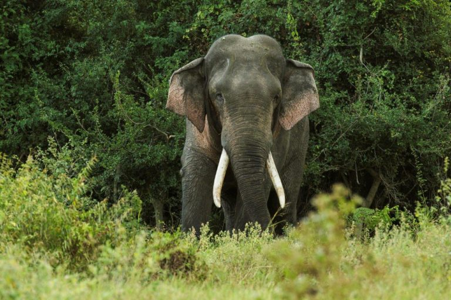
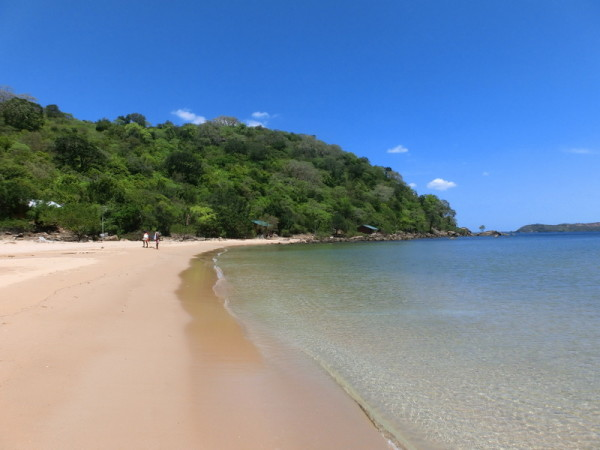
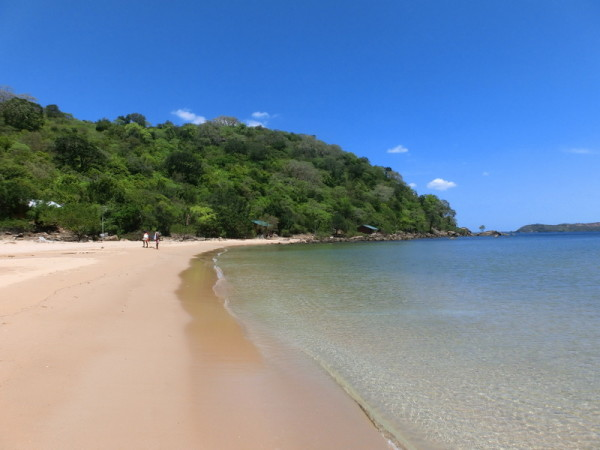
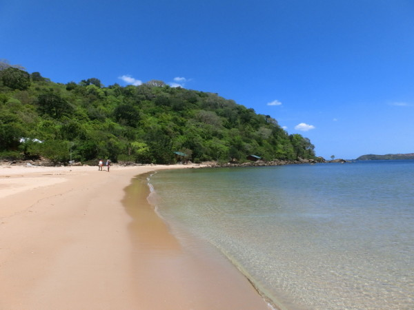
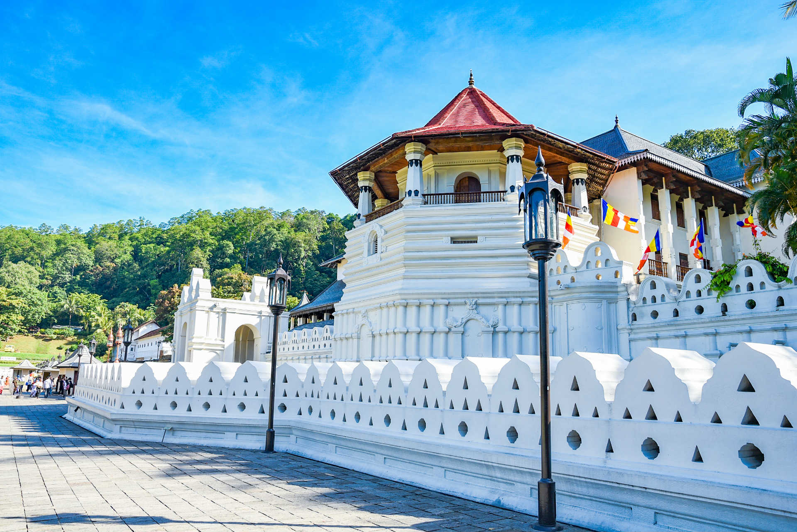
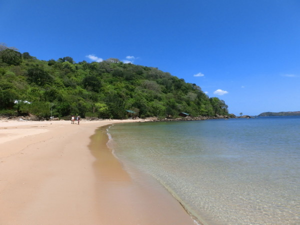

 




The Sri Lankan Travel Partner

Historic Bo-tree which is connected to the enlightment of Lord Buddha
The Rock Fortress of King Raavana & King Kashyapa.
A place to get some great insight on the Bio Diversity of Sri Lanka

Historic Temple.
If you are visiting Sri Lanka this a beach you must go.
The Great Tank of Polonnaruwa
| Name | Location | About It |
|---|---|---|
| Sri Maha Bodhiya | Anuradhapura |
|
| Sigiriya | Dambulla |
|
| Hortain Plains | Nuwara Eliya |
|
| Thupaaramaya | Anuradhapura |
|
| Marble Beach | Trincomalee |
|
| Parakrama Samudraya | Polonnaruwa |
|
| Attractions sites can be differ according to Packages |